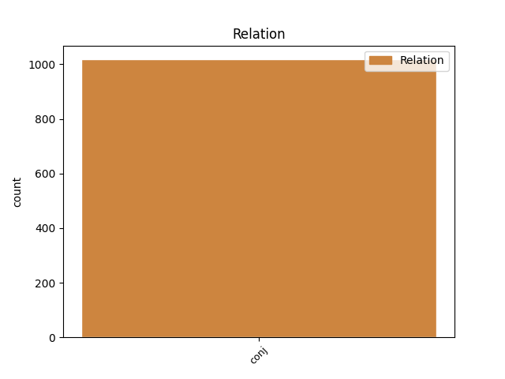
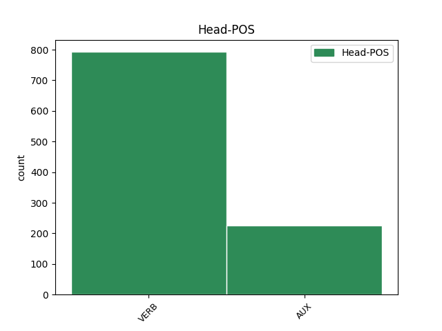
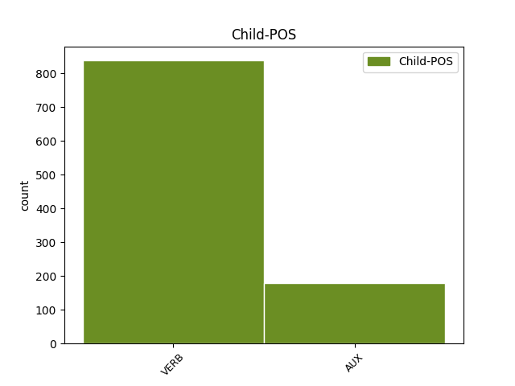

Distribution of features within this leaf



Agreement Rules sorted by frequency.
- When the dependent token is the conjunct(conj) of the head token, and the head token is VERB and the dependent token is VERB.
1 Jag _ _ _ _ 0 _ _ _
2 rörde röra VERB PAST-ACT Mood=Ind|Tense=Past|VerbForm=Fin|Voice=Act 0 _ _ _
3 mig _ _ _ _ 0 _ _ _
4 i _ _ _ _ 0 _ _ _
5 en _ _ _ _ 0 _ _ _
6 svart _ _ _ _ 0 _ _ _
7 springares _ _ _ _ 0 _ _ _
8 räta _ _ _ _ 0 _ _ _
9 vinklar _ _ _ _ 0 _ _ _
10 över _ _ _ _ 0 _ _ _
11 linjerna _ _ _ _ 0 _ _ _
12 , _ _ _ _ 0 _ _ _
13 men _ _ _ _ 0 _ _ _
14 utöver _ _ _ _ 0 _ _ _
15 några _ _ _ _ 0 _ _ _
16 uppskattande _ _ _ _ 0 _ _ _
17 affärsmän _ _ _ _ 0 _ _ _
18 fanns finnas VERB PAST-DPO Mood=Ind|Tense=Past|VerbForm=Fin 2 conj _ _
19 det _ _ _ _ 0 _ _ _
20 ingen _ _ _ _ 0 _ _ _
21 där _ _ _ _ 0 _ _ _
22 som _ _ _ _ 0 _ _ _
23 verkade _ _ _ _ 0 _ _ _
24 intresserad _ _ _ _ 0 _ _ _
25 av _ _ _ _ 0 _ _ _
26 mig _ _ _ _ 0 _ _ _
27 . _ _ _ _ 0 _ _ _
1 Scenen _ _ _ _ 0 _ _ _
2 var vara AUX PAST-ACT Mood=Ind|Tense=Past|VerbForm=Fin|Voice=Act 0 _ _ _
3 hennes _ _ _ _ 0 _ _ _
4 och _ _ _ _ 0 _ _ _
5 om _ _ _ _ 0 _ _ _
6 hon _ _ _ _ 0 _ _ _
7 uppträdde _ _ _ _ 0 _ _ _
8 för _ _ _ _ 0 _ _ _
9 någon _ _ _ _ 0 _ _ _
10 så _ _ _ _ 0 _ _ _
11 var vara VERB PAST-ACT Mood=Ind|Tense=Past|VerbForm=Fin|Voice=Act 2 conj _ _
12 det _ _ _ _ 0 _ _ _
13 för _ _ _ _ 0 _ _ _
14 sig _ _ _ _ 0 _ _ _
15 själv _ _ _ _ 0 _ _ _
16 . _ _ _ _ 0 _ _ _
1 Detta _ _ _ _ 0 _ _ _
2 var vara AUX PAST-ACT Mood=Ind|Tense=Past|VerbForm=Fin|Voice=Act 0 _ _ _
3 deras _ _ _ _ 0 _ _ _
4 sedvanliga _ _ _ _ 0 _ _ _
5 samvarotid _ _ _ _ 0 _ _ _
6 och _ _ _ _ 0 _ _ _
7 eftersom _ _ _ _ 0 _ _ _
8 de _ _ _ _ 0 _ _ _
9 inte _ _ _ _ 0 _ _ _
10 hade _ _ _ _ 0 _ _ _
11 så _ _ _ _ 0 _ _ _
12 mycket _ _ _ _ 0 _ _ _
13 gemensamt _ _ _ _ 0 _ _ _
14 och _ _ _ _ 0 _ _ _
15 än _ _ _ _ 0 _ _ _
16 mindre _ _ _ _ 0 _ _ _
17 att _ _ _ _ 0 _ _ _
18 prata _ _ _ _ 0 _ _ _
19 om _ _ _ _ 0 _ _ _
20 hade ha AUX PAST-AUX Mood=Ind|Tense=Past|VerbForm=Fin|Voice=Act 2 conj _ _
21 de _ _ _ _ 0 _ _ _
22 kommit _ _ _ _ 0 _ _ _
23 på _ _ _ _ 0 _ _ _
24 denna _ _ _ _ 0 _ _ _
25 lyckade _ _ _ _ 0 _ _ _
26 idé _ _ _ _ 0 _ _ _
27 om _ _ _ _ 0 _ _ _
28 andlig _ _ _ _ 0 _ _ _
29 förkovran _ _ _ _ 0 _ _ _
30 . _ _ _ _ 0 _ _ _
1 Hans _ _ _ _ 0 _ _ _
2 lön _ _ _ _ 0 _ _ _
3 räckte _ _ _ _ 0 _ _ _
4 inte _ _ _ _ 0 _ _ _
5 till _ _ _ _ 0 _ _ _
6 , _ _ _ _ 0 _ _ _
7 hans _ _ _ _ 0 _ _ _
8 bonus _ _ _ _ 0 _ _ _
9 räckte räcka VERB PAST-ACT Mood=Ind|Tense=Past|VerbForm=Fin|Voice=Act 0 _ _ _
10 inte _ _ _ _ 0 _ _ _
11 till _ _ _ _ 0 _ _ _
12 , _ _ _ _ 0 _ _ _
13 stimulansen _ _ _ _ 0 _ _ _
14 var vara AUX PAST-ACT Mood=Ind|Tense=Past|VerbForm=Fin|Voice=Act 9 conj _ _
15 klen _ _ _ _ 0 _ _ _
16 och _ _ _ _ 0 _ _ _
17 hans _ _ _ _ 0 _ _ _
18 bedrifter _ _ _ _ 0 _ _ _
19 inte _ _ _ _ 0 _ _ _
20 ordentligt _ _ _ _ 0 _ _ _
21 uppmärksammade _ _ _ _ 0 _ _ _
22 . _ _ _ _ 0 _ _ _
Disagree Examples:
1 Han _ _ _ _ 0 _ _ _
2 var vara AUX PAST-ACT Mood=Ind|Tense=Past|VerbForm=Fin|Voice=Act 0 _ _ _
3 haren _ _ _ _ 0 _ _ _
4 som _ _ _ _ 0 _ _ _
5 förföljde _ _ _ _ 0 _ _ _
6 sköldpaddan _ _ _ _ 0 _ _ _
7 , _ _ _ _ 0 _ _ _
8 och _ _ _ _ 0 _ _ _
9 gång _ _ _ _ 0 _ _ _
10 på _ _ _ _ 0 _ _ _
11 gång _ _ _ _ 0 _ _ _
12 måste måste AUX AUX Mood=Ind|Tense=Pres|VerbForm=Fin|Voice=Act 2 conj _ _
13 han _ _ _ _ 0 _ _ _
14 påminna _ _ _ _ 0 _ _ _
15 sig _ _ _ _ 0 _ _ _
16 själv _ _ _ _ 0 _ _ _
17 om _ _ _ _ 0 _ _ _
18 att _ _ _ _ 0 _ _ _
19 lägga _ _ _ _ 0 _ _ _
20 band _ _ _ _ 0 _ _ _
21 på _ _ _ _ 0 _ _ _
22 sig _ _ _ _ 0 _ _ _
23 . _ _ _ _ 0 _ _ _
1 Ja _ _ _ _ 0 _ _ _
2 , _ _ _ _ 0 _ _ _
3 även _ _ _ _ 0 _ _ _
4 han _ _ _ _ 0 _ _ _
5 skulle skola AUX PAST-AUX Mood=Ind|Tense=Past|VerbForm=Fin|Voice=Act 0 _ _ _
6 ha _ _ _ _ 0 _ _ _
7 velat _ _ _ _ 0 _ _ _
8 ha _ _ _ _ 0 _ _ _
9 denna _ _ _ _ 0 _ _ _
10 hustru _ _ _ _ 0 _ _ _
11 och _ _ _ _ 0 _ _ _
12 detta _ _ _ _ 0 _ _ _
13 barn _ _ _ _ 0 _ _ _
14 , _ _ _ _ 0 _ _ _
15 sitta _ _ _ _ 0 _ _ _
16 där _ _ _ _ 0 _ _ _
17 hela _ _ _ _ 0 _ _ _
18 dagarna _ _ _ _ 0 _ _ _
19 och _ _ _ _ 0 _ _ _
20 häva _ _ _ _ 0 _ _ _
21 ur _ _ _ _ 0 _ _ _
22 sig _ _ _ _ 0 _ _ _
23 en _ _ _ _ 0 _ _ _
24 massa _ _ _ _ 0 _ _ _
25 dravel _ _ _ _ 0 _ _ _
26 om _ _ _ _ 0 _ _ _
27 gamla _ _ _ _ 0 _ _ _
28 böcker _ _ _ _ 0 _ _ _
29 , _ _ _ _ 0 _ _ _
30 omges omge VERB PRES-PASS Mood=Ind|Tense=Pres|VerbForm=Fin|Voice=Pass 5 conj _ _
31 av _ _ _ _ 0 _ _ _
32 jojoar _ _ _ _ 0 _ _ _
33 och _ _ _ _ 0 _ _ _
34 skinkomeletter _ _ _ _ 0 _ _ _
35 och _ _ _ _ 0 _ _ _
36 reservoarpennor _ _ _ _ 0 _ _ _
37 . _ _ _ _ 0 _ _ _
1 Hans _ _ _ _ 0 _ _ _
2 första _ _ _ _ 0 _ _ _
3 fru _ _ _ _ 0 _ _ _
4 dog dö VERB PAST-ACT Mood=Ind|Tense=Past|VerbForm=Fin|Voice=Act 0 _ _ _
5 av _ _ _ _ 0 _ _ _
6 cancer _ _ _ _ 0 _ _ _
7 för _ _ _ _ 0 _ _ _
8 ett _ _ _ _ 0 _ _ _
9 tiotal _ _ _ _ 0 _ _ _
10 år _ _ _ _ 0 _ _ _
11 sedan _ _ _ _ 0 _ _ _
12 och _ _ _ _ 0 _ _ _
13 han _ _ _ _ 0 _ _ _
14 är vara AUX PRES-ACT Mood=Ind|Tense=Pres|VerbForm=Fin|Voice=Act 4 conj _ _
15 omgift _ _ _ _ 0 _ _ _
16 . _ _ _ _ 0 _ _ _
1 De _ _ _ _ 0 _ _ _
2 var vara AUX PAST-ACT Mood=Ind|Tense=Past|VerbForm=Fin|Voice=Act 0 _ _ _
3 erövrare _ _ _ _ 0 _ _ _
4 och _ _ _ _ 0 _ _ _
5 till _ _ _ _ 0 _ _ _
6 det _ _ _ _ 0 _ _ _
7 fordras fordra VERB PRES-PASS Mood=Ind|Tense=Pres|VerbForm=Fin|Voice=Pass 2 conj _ _
8 bara _ _ _ _ 0 _ _ _
9 råa _ _ _ _ 0 _ _ _
10 styrkan _ _ _ _ 0 _ _ _
11 – _ _ _ _ 0 _ _ _
12 ingenting _ _ _ _ 0 _ _ _
13 att _ _ _ _ 0 _ _ _
14 skryta _ _ _ _ 0 _ _ _
15 med _ _ _ _ 0 _ _ _
16 eftersom _ _ _ _ 0 _ _ _
17 ens _ _ _ _ 0 _ _ _
18 styrka _ _ _ _ 0 _ _ _
19 bara _ _ _ _ 0 _ _ _
20 är _ _ _ _ 0 _ _ _
21 det _ _ _ _ 0 _ _ _
22 tillfälliga _ _ _ _ 0 _ _ _
23 resultatet _ _ _ _ 0 _ _ _
24 av _ _ _ _ 0 _ _ _
25 andras _ _ _ _ 0 _ _ _
26 svaghet _ _ _ _ 0 _ _ _
27 . _ _ _ _ 0 _ _ _
1 Ja _ _ _ _ 0 _ _ _
2 , _ _ _ _ 0 _ _ _
3 dit _ _ _ _ 0 _ _ _
4 kom komma VERB PAST-ACT Mood=Ind|Tense=Past|VerbForm=Fin|Voice=Act 0 _ _ _
5 jag _ _ _ _ 0 _ _ _
6 aldrig _ _ _ _ 0 _ _ _
7 , _ _ _ _ 0 _ _ _
8 och _ _ _ _ 0 _ _ _
9 jag _ _ _ _ 0 _ _ _
10 tänker tänka VERB PRES-ACT Mood=Ind|Tense=Pres|VerbForm=Fin|Voice=Act 4 conj _ _
11 inte _ _ _ _ 0 _ _ _
12 försöka _ _ _ _ 0 _ _ _
13 nu _ _ _ _ 0 _ _ _
14 . _ _ _ _ 0 _ _ _